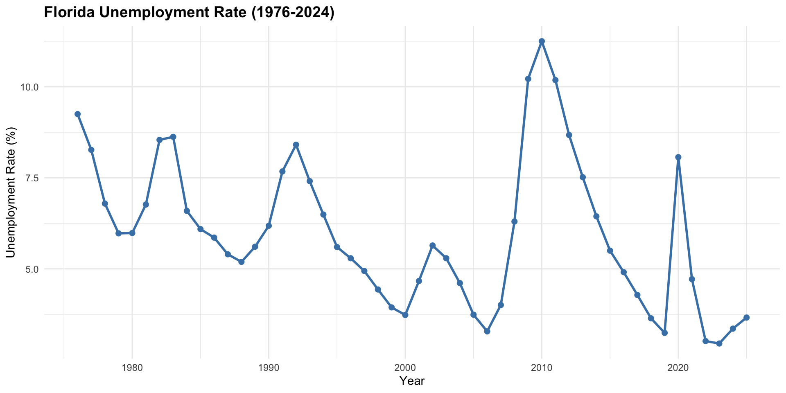
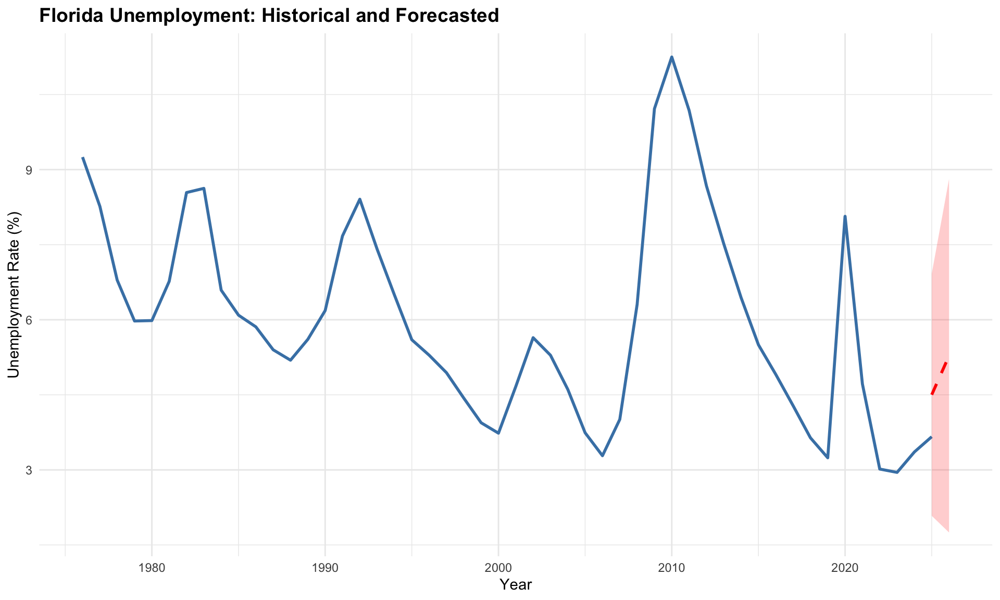
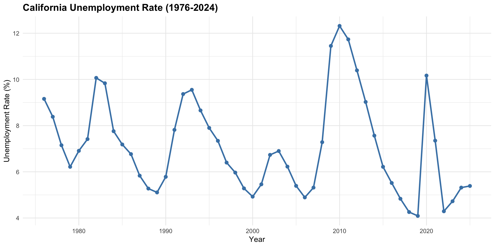
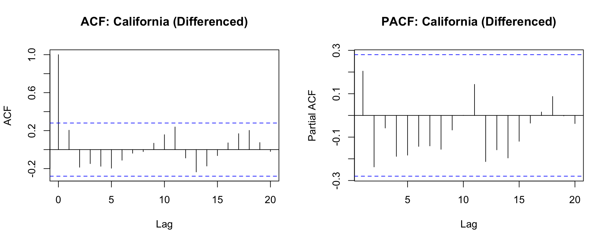
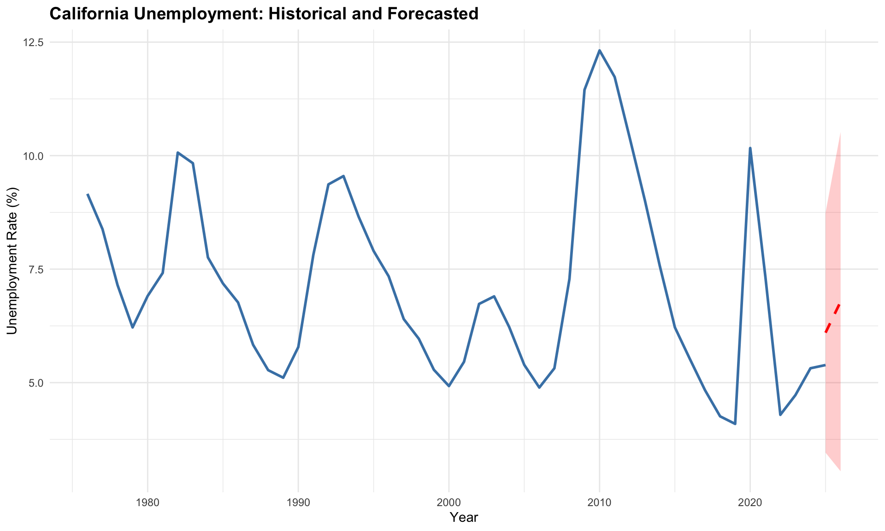
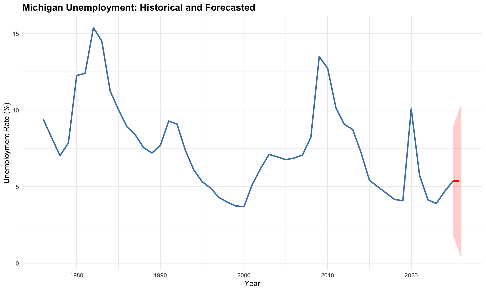

| State | Type | 2024 Rate | 2026 Forecast | Change | 95% CI |
|---|---|---|---|---|---|
| Florida | Red | 3.66% | 5.28% | +1.62% | [1.75%, 8.81%] |
| California | Blue | 5.39% | 6.78% | +1.40% | [3.05%, 10.52%] |
| Michigan | Swing | 5.36% | 5.36% | +0.00% | [0.32%, 10.40%] |
Time Series Forecasting
We conducted time series analysis to forecast unemployment rates for the 2026 midterm election across three representative states using ARIMA models fit to historical data from 1976 to 2024.
2026 Unemployment Forecasts
Florida Unemployment Forecast (Red State)
Time Series Plot
Code
ggplot(fl_data, aes(x = year, y = unemployment_rate)) +
geom_line(color = "steelblue", linewidth = 1) +
geom_point(color = "steelblue", size = 2) +
labs(
title = "Florida Unemployment Rate (1976-2024)",
x = "Year",
y = "Unemployment Rate (%)"
) +
theme_minimal() +
theme(
plot.title = element_text(face = "bold", size = 14)
)
Stationarity Assessment
Code
# ADF test on original series
adf_fl <- adf.test(fl_ts)
# Differencing
fl_diff <- diff(fl_ts, differences = 1)
adf_fl_diff <- adf.test(fl_diff)
tibble(
Series = c("Original", "After Differencing"),
`ADF Statistic` = c(adf_fl$statistic, adf_fl_diff$statistic),
`p-value` = c(round(adf_fl$p.value, 3), round(adf_fl_diff$p.value, 3)),
Conclusion = c(
ifelse(adf_fl$p.value < 0.05, "Stationary", "Non-stationary"),
ifelse(adf_fl_diff$p.value < 0.05, "Stationary", "Non-stationary")
)
) %>%
kable(caption = "Stationarity Testing: Florida") %>%
kable_styling(bootstrap_options = c("striped", "hover"), full_width = FALSE)| Series | ADF Statistic | p-value | Conclusion |
|---|---|---|---|
| Original | -2.886341 | 0.219 | Non-stationary |
| After Differencing | -4.354556 | 0.010 | Stationary |
- ADF test (original series): p = 0.22 (non-stationary)
- ADF test (after differencing): p < 0.01 (stationary)
First-order differencing was required to achieve stationarity.
ACF and PACF Plots
Code
par(mfrow = c(1, 2))
acf(fl_diff, main = "ACF: Florida (Differenced)", lag.max = 20)
pacf(fl_diff, main = "PACF: Florida (Differenced)", lag.max = 20)
Model Selection
Code
# Fit candidate models
fl_model1 <- Arima(fl_ts, order = c(0, 1, 1))
fl_model2 <- Arima(fl_ts, order = c(1, 1, 0))
fl_model3 <- Arima(fl_ts, order = c(1, 1, 1))
fl_model4 <- Arima(fl_ts, order = c(2, 1, 0))
# Auto ARIMA
fl_auto <- auto.arima(fl_ts, seasonal = FALSE)
tibble(
Model = c("ARIMA(0,1,1)", "ARIMA(1,1,0)", "ARIMA(1,1,1)", "ARIMA(2,1,0)", "Auto ARIMA"),
Specification = c("MA(1) with diff", "AR(1) with diff", "ARMA(1,1) with diff", "AR(2) with diff", paste0("ARIMA", paste0(arimaorder(fl_auto), collapse = ","))),
AIC = c(AIC(fl_model1), AIC(fl_model2), AIC(fl_model3), AIC(fl_model4), AIC(fl_auto))
) %>%
kable(caption = "Model Comparison: Florida", digits = 2) %>%
kable_styling(bootstrap_options = c("striped", "hover"), full_width = FALSE)| Model | Specification | AIC |
|---|---|---|
| ARIMA(0,1,1) | MA(1) with diff | 170.19 |
| ARIMA(1,1,0) | AR(1) with diff | 170.73 |
| ARIMA(1,1,1) | ARMA(1,1) with diff | 172.15 |
| ARIMA(2,1,0) | AR(2) with diff | 171.45 |
| Auto ARIMA | ARIMA2,0,0 | 169.08 |
- Best manual model: ARIMA(0,1,1), AIC = 170.19
- Auto.arima selection: ARIMA(2,0,0), AIC = 169.08
ARIMA(2,0,0) demonstrated superior fit.
Forecast
Code
# Create forecast dataframe
forecast_df_fl <- data.frame(
year = c(time(fl_ts), 2025, 2026),
actual = c(as.numeric(fl_ts), NA, NA),
forecast = c(rep(NA, length(fl_ts)), fl_forecast$mean[1], fl_forecast$mean[2]),
lower = c(rep(NA, length(fl_ts)), fl_forecast$lower[1, 2], fl_forecast$lower[2, 2]),
upper = c(rep(NA, length(fl_ts)), fl_forecast$upper[1, 2], fl_forecast$upper[2, 2])
)
ggplot(forecast_df_fl) +
geom_line(aes(x = year, y = actual), color = "steelblue", linewidth = 1) +
geom_line(aes(x = year, y = forecast), color = "red", linetype = "dashed", linewidth = 1) +
geom_ribbon(aes(x = year, ymin = lower, ymax = upper), fill = "red", alpha = 0.2) +
labs(
title = "Florida Unemployment: Historical and Forecasted",
x = "Year",
y = "Unemployment Rate (%)"
) +
theme_minimal() +
theme(plot.title = element_text(face = "bold", size = 14))
Florida unemployment is forecast to rise from 3.66% in 2024 to 5.28% in 2026, representing an increase of 1.62 percentage points (95% CI: [1.75%, 8.81%]).
California Unemployment Forecast (Blue State)
Time Series Plot
Code
ggplot(ca_data, aes(x = year, y = unemployment_rate)) +
geom_line(color = "steelblue", linewidth = 1) +
geom_point(color = "steelblue", size = 2) +
labs(
title = "California Unemployment Rate (1976-2024)",
x = "Year",
y = "Unemployment Rate (%)"
) +
theme_minimal() +
theme(plot.title = element_text(face = "bold", size = 14))
Stationarity Assessment
Code
# ADF test on original series
adf_ca <- adf.test(ca_ts)
# Differencing
ca_diff <- diff(ca_ts, differences = 1)
adf_ca_diff <- adf.test(ca_diff)
tibble(
Series = c("Original", "After Differencing"),
`ADF Statistic` = c(adf_ca$statistic, adf_ca_diff$statistic),
`p-value` = c(round(adf_ca$p.value, 3), round(adf_ca_diff$p.value, 3)),
Conclusion = c(
ifelse(adf_ca$p.value < 0.05, "Stationary", "Non-stationary"),
ifelse(adf_ca_diff$p.value < 0.05, "Stationary", "Non-stationary")
)
) %>%
kable(caption = "Stationarity Testing: California") %>%
kable_styling(bootstrap_options = c("striped", "hover"), full_width = FALSE)| Series | ADF Statistic | p-value | Conclusion |
|---|---|---|---|
| Original | -3.481573 | 0.053 | Non-stationary |
| After Differencing | -4.228243 | 0.010 | Stationary |
- ADF test (original series): p = 0.05 (non-stationary)
- ADF test (after differencing): p < 0.01 (stationary)
First-order differencing was applied.
ACF and PACF Plots
Code
par(mfrow = c(1, 2))
acf(ca_diff, main = "ACF: California (Differenced)", lag.max = 20)
pacf(ca_diff, main = "PACF: California (Differenced)", lag.max = 20)
Model Selection
Code
# Auto ARIMA
ca_auto <- auto.arima(ca_ts, seasonal = FALSE)
summary(ca_auto)Series: ca_ts
ARIMA(2,0,0) with non-zero mean
Coefficients:
ar1 ar2 mean
0.9991 -0.3947 7.1179
s.e. 0.1284 0.1285 0.4625
sigma^2 = 1.818: log likelihood = -84.87
AIC=177.75 AICc=178.63 BIC=185.39
Training set error measures:
ME RMSE MAE MPE MAPE MASE
Training set -0.01746611 1.307256 0.8919301 -3.491567 12.84523 0.8169715
ACF1
Training set -0.003705874- Auto.arima selection: ARIMA(2,0,0), AIC = 177.75
Interestingly, this matches Florida’s specification despite opposing political contexts.
Forecast
Code
# Create forecast dataframe
forecast_df_ca <- data.frame(
year = c(time(ca_ts), 2025, 2026),
actual = c(as.numeric(ca_ts), NA, NA),
forecast = c(rep(NA, length(ca_ts)), ca_forecast$mean[1], ca_forecast$mean[2]),
lower = c(rep(NA, length(ca_ts)), ca_forecast$lower[1, 2], ca_forecast$lower[2, 2]),
upper = c(rep(NA, length(ca_ts)), ca_forecast$upper[1, 2], ca_forecast$upper[2, 2])
)
ggplot(forecast_df_ca) +
geom_line(aes(x = year, y = actual), color = "steelblue", linewidth = 1) +
geom_line(aes(x = year, y = forecast), color = "red", linetype = "dashed", linewidth = 1) +
geom_ribbon(aes(x = year, ymin = lower, ymax = upper), fill = "red", alpha = 0.2) +
labs(
title = "California Unemployment: Historical and Forecasted",
x = "Year",
y = "Unemployment Rate (%)"
) +
theme_minimal() +
theme(plot.title = element_text(face = "bold", size = 14))
California unemployment is forecast to rise from 5.39% in 2024 to 6.78% in 2026, an increase of 1.4 percentage points (95% CI: [3.05%, 10.52%]).
Michigan Unemployment Forecast (Swing State)
Time Series Plot
Code
ggplot(mi_data, aes(x = year, y = unemployment_rate)) +
geom_line(color = "steelblue", linewidth = 1) +
geom_point(color = "steelblue", size = 2) +
labs(
title = "Michigan Unemployment Rate (1976-2024)",
x = "Year",
y = "Unemployment Rate (%)"
) +
theme_minimal() +
theme(plot.title = element_text(face = "bold", size = 14))
Stationarity Assessment
Code
# ADF test on original series
adf_mi <- adf.test(mi_ts)
# Differencing
mi_diff <- diff(mi_ts, differences = 1)
adf_mi_diff <- adf.test(mi_diff)
tibble(
Series = c("Original", "After Differencing"),
`ADF Statistic` = c(adf_mi$statistic, adf_mi_diff$statistic),
`p-value` = c(round(adf_mi$p.value, 3), round(adf_mi_diff$p.value, 3)),
Conclusion = c(
ifelse(adf_mi$p.value < 0.05, "Stationary", "Non-stationary"),
ifelse(adf_mi_diff$p.value < 0.05, "Stationary", "Non-stationary")
)
) %>%
kable(caption = "Stationarity Testing: Michigan") %>%
kable_styling(bootstrap_options = c("striped", "hover"), full_width = FALSE)| Series | ADF Statistic | p-value | Conclusion |
|---|---|---|---|
| Original | -2.690475 | 0.297 | Non-stationary |
| After Differencing | -3.950648 | 0.019 | Stationary |
- ADF test (original series): p = 0.3 (non-stationary)
- ADF test (after differencing): p < 0.01 (stationary)
Model Selection
Code
# Auto ARIMA
mi_auto <- auto.arima(mi_ts, seasonal = FALSE)
summary(mi_auto)Series: mi_ts
ARIMA(0,1,0)
sigma^2 = 3.308: log likelihood = -98.84
AIC=199.67 AICc=199.76 BIC=201.56
Training set error measures:
ME RMSE MAE MPE MAPE MASE
Training set -0.0803955 1.800389 1.202604 -3.478451 15.28331 0.9801531
ACF1
Training set 0.07077338- Auto.arima selection: ARIMA(0,1,0), AIC = 199.67
This is a random walk specification, reflecting higher volatility in manufacturing-dependent economies. This simpler structure contrasts sharply with the AR(2) models for Florida and California.
Forecast
Code
# Create forecast dataframe
forecast_df_mi <- data.frame(
year = c(time(mi_ts), 2025, 2026),
actual = c(as.numeric(mi_ts), NA, NA),
forecast = c(rep(NA, length(mi_ts)), mi_forecast$mean[1], mi_forecast$mean[2]),
lower = c(rep(NA, length(mi_ts)), mi_forecast$lower[1, 2], mi_forecast$lower[2, 2]),
upper = c(rep(NA, length(mi_ts)), mi_forecast$upper[1, 2], mi_forecast$upper[2, 2])
)
ggplot(forecast_df_mi) +
geom_line(aes(x = year, y = actual), color = "steelblue", linewidth = 1) +
geom_line(aes(x = year, y = forecast), color = "red", linetype = "dashed", linewidth = 1) +
geom_ribbon(aes(x = year, ymin = lower, ymax = upper), fill = "red", alpha = 0.2) +
labs(
title = "Michigan Unemployment: Historical and Forecasted",
x = "Year",
y = "Unemployment Rate (%)"
) +
theme_minimal() +
theme(plot.title = element_text(face = "bold", size = 14))
Michigan unemployment is forecast to rise from 5.36% to 5.36% in 2026, an increase of 0 percentage points (95% CI: [0.32%, 10.4%]). The wide confidence interval reflects substantial forecast uncertainty.
Comparative Analysis
Model Specifications
- Florida & California: Both exhibit ARIMA(2,0,0) specifications, indicating comparable economic stability across partisan contexts
- Michigan: ARIMA(0,1,0) reflects manufacturing-sector volatility, evidenced by large cyclical swings during the 1982, 2008, and 2020 recessions
Forecast Convergence
All three states forecast rising unemployment heading into 2026:
- Largest increase: Florida (+1.62 percentage points)
- Moderate increases: California (+1.4), Michigan (+0)
Despite historical differences, forecasts converge to similar levels (5.28% to 6.78%), though confidence intervals span 5.3 to 7.1 percentage points, reflecting considerable uncertainty.
Implications
Limited Predictive Power for Turnout
Given the weak unemployment-turnout correlation identified earlier (p = 0.0217), these forecasts provide economic context but limited predictive power for voter participation.
Differential Predictability
The key finding concerns differential predictability:
- Stable economies (Florida & California): Enable reliable forecasting
- Volatile economy (Michigan): Complicates prediction and suggests swing state campaigns must account for greater economic uncertainty
2026 Context
All three states are entering the 2026 midterm with rising unemployment, which may influence campaign messaging around economic issues, though the direct effect on turnout appears modest based on our earlier analyses.
Methodological Notes
- Stationarity: Assessed via ADF test and ACF plots
- Model selection: Manual specification + auto.arima comparison
- Evaluation criteria: AIC, BIC, diagnostic checks
- Forecasting horizon: 2025-2026
- Confidence intervals: 95% level